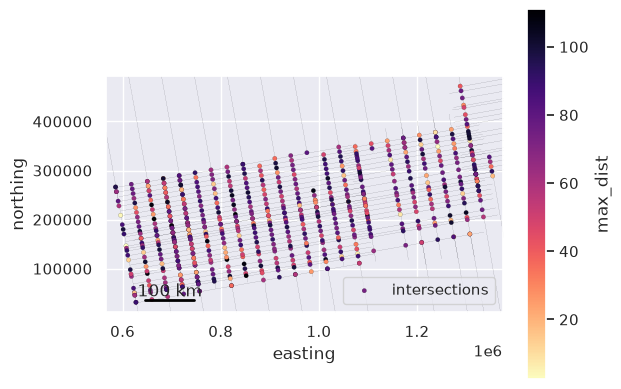
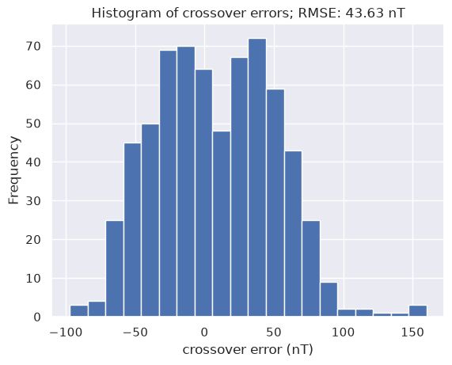

Cross-over errors#
This notebooks shows how to compute and analyze crossover errors between airborne flight lines.
[1]:
%load_ext autoreload
%autoreload 2
import logging
import matplotlib.pyplot as plt
import numpy as np
import pandas as pd
import plotly.io as pio
import verde as vd
import airbornegeo
# setup logging to get some additional info from the airbornegeo functions
logging.getLogger("airbornegeo").setLevel("INFO")
logging.basicConfig()
pio.renderers.default = "notebook"
Load data#
This is a subset of the BAS AGAP survey over Antarctica’s Gamburtsev Subglacial Mountains. The file is downloaded and subset in the notebook AGAP_magnetic_survey.
[2]:
data_df = pd.read_csv("data/AGAP_magnetic_survey_processed_blocked.csv")
data_df = data_df[
[
"easting",
"northing",
"height",
"line",
"unixtime",
"distance_along_line",
"mag",
]
]
# for testing limit number of lines
data_df = data_df[~data_df.line.between(133, 142)]
data_df = data_df[~data_df.line.between(168, 176)]
data_df = data_df[
(data_df.line.isin(data_df.line.unique()[::2])) | (data_df.line >= 143)
]
# define survey lines (0) vs tie lines (1)
data_df["line_type"] = np.where(data_df.line >= 142, 1, 0)
data_df.head()
[2]:
| easting | northing | height | line | unixtime | distance_along_line | mag | line_type | |
|---|---|---|---|---|---|---|---|---|
| 0 | 621152.853769 | 159064.167598 | 4112.55 | 1 | 1.229500e+09 | 81.451091 | -34.245 | 0 |
| 1 | 621367.339673 | 159092.051982 | 4119.45 | 1 | 1.229500e+09 | 297.742539 | -37.740 | 0 |
| 2 | 621580.287957 | 159122.206492 | 4124.15 | 1 | 1.229500e+09 | 512.819231 | -40.975 | 0 |
| 3 | 621766.100699 | 159150.747140 | 4127.50 | 1 | 1.229500e+09 | 700.811387 | -43.430 | 0 |
| 4 | 621924.954435 | 159176.326498 | 4131.00 | 1 | 1.229500e+09 | 861.711758 | -45.300 | 0 |
[ ]:
survey = airbornegeo.Survey(
data_df,
line_column="line",
distance_column="distance_along_line",
)
survey
[ ]:
fig, ax = plt.subplots(figsize=(10, 10))
ax = survey.plot(ax=ax, s=0.1)
airbornegeo.add_scalebar(ax, 100e3)
Find intersections and interpolate their values#
See previous notebooks for more details on these steps.
[ ]:
# calculate theoretical intersection points
survey.create_intersection_table(method="groups")
# interpolate data values at intersections
survey.interpolate_intersections(
to_interp="mag",
window_width=1000,
method="cubic",
extrapolate=True,
)
# capture data_df and inters for use in downstream cells
data_df = survey.data
inters = survey.intersections
[5]:
ax = data_df.plot.scatter(
"easting",
"northing",
color="k",
s=1,
lw=0,
marker=".",
alpha=0.01,
)
inters.plot.scatter(
"easting",
"northing",
c="max_dist",
s=10,
cmap="magma_r",
marker="o",
edgecolor="black",
linewidth=0.1,
ax=ax,
label="intersections",
)
# zoom into region with intersections
reg = vd.get_region((inters.easting, inters.northing))
reg = vd.pad_region(reg, 20e3)
ax.set_xlim(reg[0], reg[1])
ax.set_ylim(reg[2], reg[3])
airbornegeo.add_scalebar(ax, 100e3)
ax.set_aspect("equal")

Calculate intersection crossover errors#
Now we have interpolated magnetic values for each intersecting line at the intersection points, we can calculate the cross-over errors for each intersection.
Running this function will add a new column to the intersections table ‘crossover_error_0’. Everytime you rerun the function it will add a new column, incrementing the number (-> ‘crossover_error_0’). However, if the crossover errors are identical to the last column (if nothing has changed), it will not add a new column.
This error is always defined as line1 - line2. Where line1 and line2 are defined in the intersections table.
Below we show a map of these crossover errors, and a histogram of their values.
[ ]:
survey.calculate_crossover_errors(data_col="mag")
data_df = survey.data
inters = survey.intersections
inters.head()
[ ]:
fig = survey.plotly_points(
color="gray",
hover_cols=["line"],
size=1,
)
fig = airbornegeo.plotly_points(
inters,
fig=fig,
color_col="crossover_error_0",
hover_cols=["line1", "line2"],
size=5,
edge_width=1,
cmap="balance",
robust=True,
absolute=True,
)
fig.show()
[9]:
ax = inters.crossover_error_0.plot.hist(bins=20)
ax.set_xlabel("crossover error (nT)")
ax.set_title(
f"Histogram of crossover errors; RMSE: {round(airbornegeo.rmse(inters.crossover_error_0), 2)} nT"
);

Save results to use in the following notebooks#
[ ]:
survey.data.to_csv("data/AGAP_magnetic_survey_with_intersections.csv", index=None)
survey.intersections.to_csv("data/AGAP_magnetic_survey_intersections.csv", index=None)